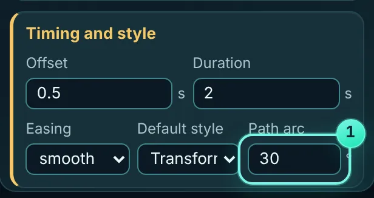
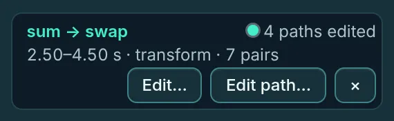
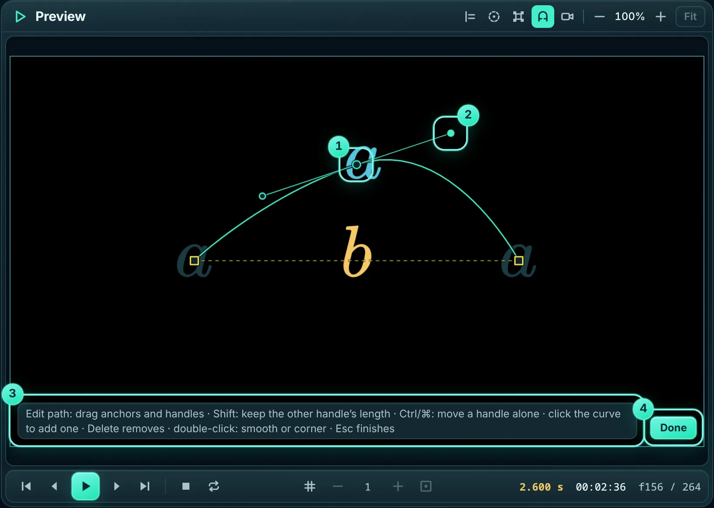
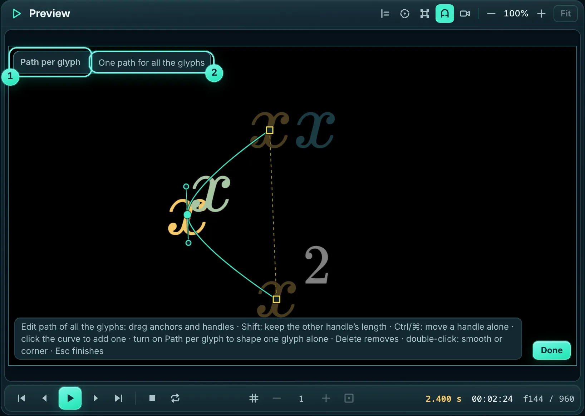
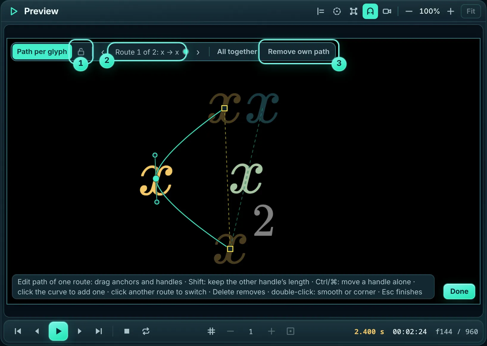
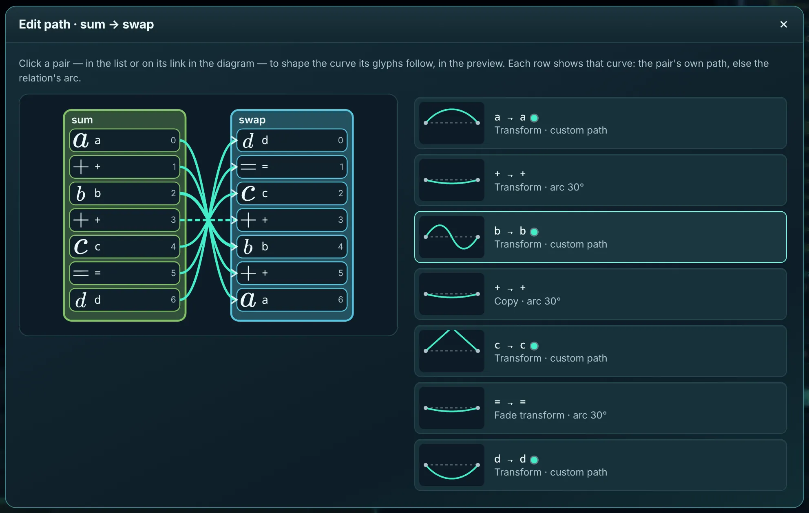
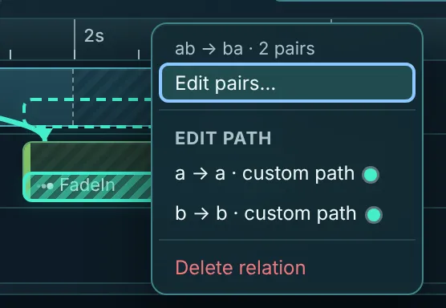
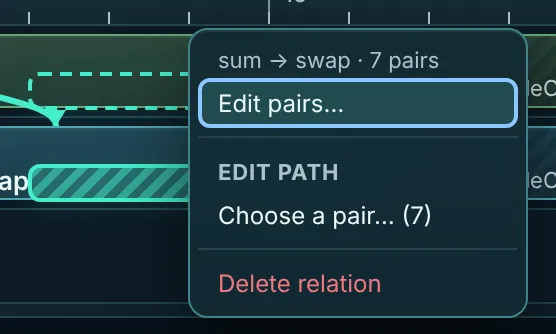
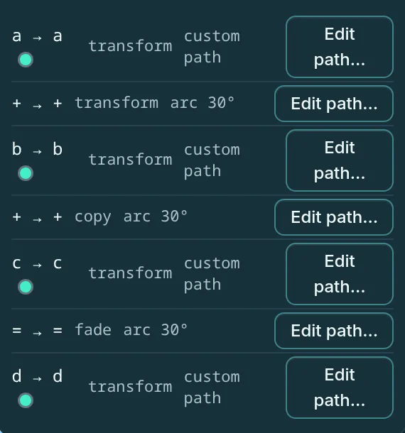
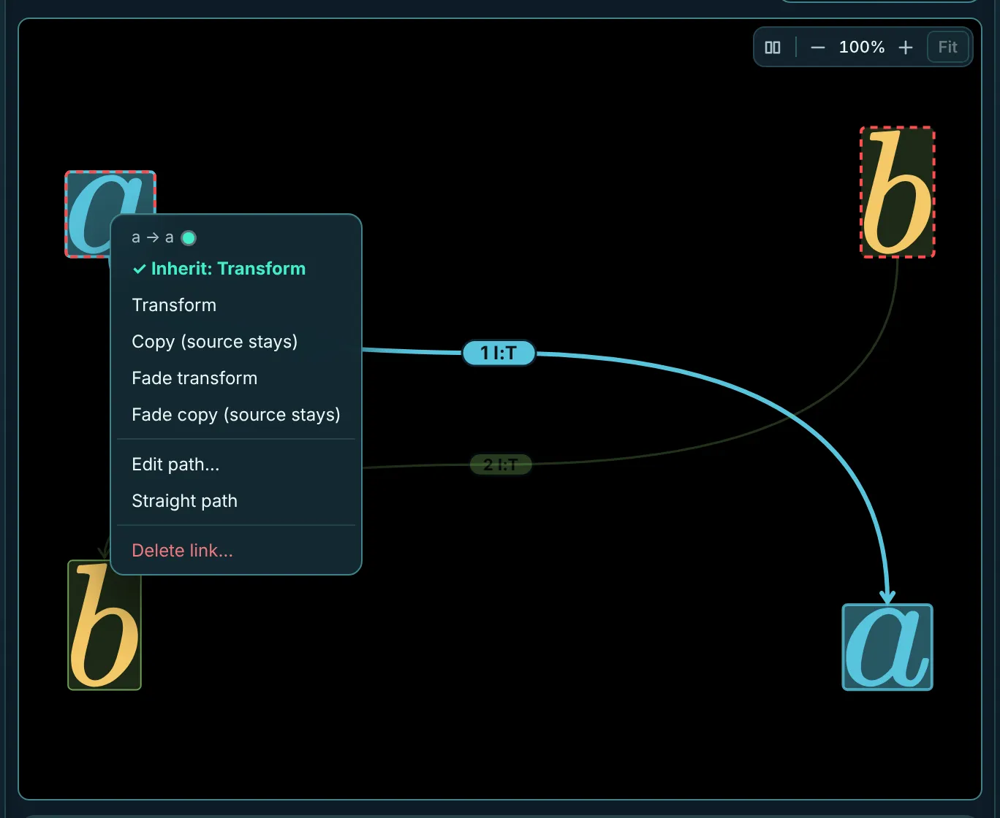

Custom paths
A glyph travels from where it is to where it is going in a straight line, unless you say otherwise. Bend every line of a relation with one number, or draw the route of a single pair in the Preview, as you would a curve in a vector editor.
How a glyph travels
A relation moves the glyphs of its pairs during its window. Each glyph starts where its source formula has it when the window opens and ends where its target formula has it when the window closes. Between the two it follows a path. There are three kinds:
- Straight, the default: the shortest way.
- The relation's Path arc: one angle that bends the way of every pair that has no path of its own.
- A custom path: a curve of your own for one pair, with anchors and handles.
A pair with a custom path ignores the Path arc. The same two tools exist on Morph blocks, which move glyphs inside one formula.
| You want | Use |
|---|---|
| A direct move, the least to look at | Straight: leave the Path arc at 0°. |
| Glyphs that pass each other, or a gentle swing for everything that moves | The relation's Path arc. |
| One glyph to hop, loop or weave, or two glyphs to take different routes | A custom path for each of those pairs. |
The path arc
Select a relation: click its band on the timeline, or its row in the
Relations list of one of its clips. In the Animations panel, the section
Timing and style has the field Path arc, in
degrees (the Animation tab of the relation editor has it too).
0° keeps the glyphs on straight lines; any value from −360° to 360° bends them.

The sign says which way the glyph swings. A positive arc swings to the right of the glyph's own direction, a negative one to the left. A glyph that travels to the right has its right-hand side below it, so it passes under the straight line; one that travels to the left passes over it. Because every glyph bends to the same side of its own way, glyphs that go different ways swing past each other instead of through each other: the swap of the two sides of an equation is the classic case.
Paths edited by hand
When one glyph must hop over another, or weave round a third, a single angle is not enough. Give that pair a path of its own. Here two letters trade places. Along straight paths they run through each other; with a path for each, the a hops over and the b slides under.
Opening the mode
The curve is edited in the Preview, on the real positions, in a mode of its own called Edit path. There are several ways in; all of them open it on one pair.
| Where | What Edit path… does there |
|---|---|
| A clip's Relations list, on the row of the relation | Opens the mode on its only pair, or the path picker when the relation has several. |
| The panel of a selected relation, in the list of Pairs | Opens the mode on that pair. |
| A right-click on the relation's band on the timeline | Lists the pairs under Edit path, or offers Choose a pair…. |
| The relation editor: the list of pairs, or the menu of a pair | Saves the relation, closes the editor and opens the mode on that pair. |
| A Morph block: its panel, its dialog, its pair editor | Opens the mode on that pair (the dialog and the editor close first). |

In the mode
The playhead jumps to the middle of the pair's window, so the glyph is on screen halfway along its way. The curve is drawn over the Preview from where the glyph starts to where it ends; those two places are marked by a faint copy of the glyph, and a dashed line joins them (the straight chord). A pair that has no path of its own starts from the arc it follows, turned into anchors and handles: the plain chord at 0°.

Four words are enough to read the curve:
- Chord
- the straight line from where the glyph starts to where it ends (dashed);
- Anchor
- a point the curve passes through; the first and the last sit on the chord's ends;
- Handle
- the control point that sets how the curve leaves or reaches an anchor: the farther it is, the longer the curve keeps its direction;
- Smooth or corner
- on a smooth anchor the two handles stay in a line, so the curve has no kink there; on a corner they point anywhere.
Every gesture is one step of the undo history, and the glyph follows the curve as you change it.
| Do this | What happens |
|---|---|
| Press on the curve and drag | Adds an anchor there and moves it with the pointer. |
| Drag an anchor | Moves it with its handles. The first and the last anchor sit on the glyph's two places and stay put. |
| Drag a handle | Reshapes the curve beside its anchor. On a smooth anchor the other handle mirrors it: it turns to stay opposite and takes the same length. |
| Drag a handle with Shift held | On a smooth anchor the other handle turns to stay opposite, but keeps its own length. |
| Drag a handle with Ctrl held | Moves only that handle: the anchor becomes a corner. |
| Double-click an anchor | Makes a corner smooth, or a smooth anchor a corner. |
| Delete | Removes the selected anchor, or takes the selected handle back onto its anchor. |
| ← → ↑ ↓ | Nudge the selected anchor or handle by one pixel of the Preview; with Shift, by ten. A nudged handle mirrors the other one, as a drag does. |
| Enter, Esc or Done | Leaves the mode. Esc first cancels a drag in progress. An entry chosen in the Preview's right-click menu leaves the mode too, keeping the path; closing that menu with Esc does not. On a button of the mode's bar (Path per glyph, the arrows of the routes…), Enter presses that button instead. |
What is kept
- The curve is stored in the frame of the pair's own chord, as fractions of its length, so it follows the formulas when you move or scale them.
- The glyph travels the curve at a steady pace; the relation's Easing still decides how that pace speeds up and slows down.
- A pair of several glyphs applies the curve to each glyph along its own chord.
- A path that you leave as the plain chord, or as the arc it started from, is dropped: the pair goes back to following the relation's Path arc.
A path for one glyph of a pair
A pair of several glyphs has several routes: each is one source glyph on its way to one target glyph. Two glyphs that become one have two routes, one glyph that becomes two has two, and two glyphs that become three have three, as Manim pairs them up. The path of the pair is common to all its routes, each on its own chord. A route can also have a path of its own.
In the mode, such a pair is edited as one path to begin with. The curve is drawn once, along the first route, and a bar at the top left says that it is the path of all the glyphs: each glyph takes the same shape on its own way.

To shape one route alone, press Path per glyph. Every route is drawn now, dimmed: dashed while it follows the common path, solid with a dot once it has its own. The bar says what you are editing, and starts on All together, the common path. Click a route's curve, or the faint glyph at its start or at its end, or step through the routes with the arrows of the bar: the curve with the anchors is then that route's, on its own chord, and the first change gives the route a path of its own. When a route of the pair has a path of its own already, the mode opens with Path per glyph on.

- Editing the common path moves every route that has no path of its own.
- The padlock beside Path per glyph locks the other routes: they stay drawn, but a click on them or on their glyphs chooses nothing, so a curve can be shaped right next to them. The arrows of the bar still choose the route.
- Remove own path takes the path of the chosen route away; All together goes back to the common path.
- Turning Path per glyph off goes back to the common path and deletes nothing: the routes keep their own paths and play them, and the bar says how many have one (“1 route with its own path”).
- A path of a route that you leave as what the route would follow anyway is dropped, as a plain path of the pair is.
- A Fade transform or a Fade copy of a group has no routes: the group cross-fades whole, so that pair has its one path. Several sources onto one target have a route each when they arrive Separate or as Copies (the pair list).
- To give each source its own style too, take the pair apart: separate pairs onto one target.
The path picker
With several pairs, Edit path… on a relation's row opens the picker instead of choosing for you. It shows the relation as a diagram, with one row for each pair: a small picture of the curve that pair follows, what it goes from and to, its style, and whether it follows a custom path, the arc or a straight line. Point at a row and its link lights up in the diagram, and the other way round; a click on either opens the mode on that pair.

The relation's band on the timeline has a menu of its own (right-click it). With up to five pairs it lists them under Edit path; with more it offers Choose a pair…, which opens the picker.


The marks of an edited path
A pair whose path you drew wears a small dot wherever pairs are listed beside an
Edit path…; point at it and it says Edited path. A relation's
row in the Relations list counts them (“4 paths edited”). The lists of
pairs in the panel of a relation and of a Morph block also say what each pair follows:
custom path, arc 30° or straight. A pair whose only
edited paths are those of its routes wears the dot too, and reads
custom path on a route.

Taking a path away
To give a pair the relation's arc back, open the relation editor, right-click one of its glyphs (or select it and click the badge of its link), and choose Straight path, which takes the paths of its routes away as well. With several edited links selected the entry says how many (Straight paths (3)). Ctrl+Z undoes any change of a path, one gesture at a time.

How paths export
The Path arc becomes Manim's own path_arc, in degrees, on each transform of the
relation. A custom path is played through a small helper, _spline_path, which the
export writes at the top of the file. It takes the curve as a list of anchors and handles,
in the frame of the chord, and moves each glyph along it at a steady pace. The helper is
the same in ManimCE and in ManimGL, and it does the same arithmetic as the Preview, so the
video shows what you drew. When the glyphs of one transform follow different paths (a pair
whose routes have paths of their own), a second helper,
_route_paths, wraps that transform and gives each glyph the path of its
route, also when two glyphs are drawn on the same spot.
In the project of the three rows at the top of this page, the transform of the second row carries the arc and the transform of the third row carries its own path:
ReplacementTransform(arc_g[0], arc_end_g[0], path_arc=-45 * DEGREES),
ReplacementTransform(edited_g[0], edited_end_g[0], path_func=_spline_path([…])),The swap of the two letters exports the same way, one path_func=_spline_path([…]) for each
of its two pairs:
Good to know
- A glyph that does not move (its start and its end are the same place) has no chord, so it has no path: the hint says so and the glyph plays straight.
- On a locked track Edit path… is greyed out, and says why.
- In the relation editor, Preview raw shows every glyph on a straight line. Use Preview (or the main Preview) to see arcs and custom paths.
Where to go next
- Morph blocks make a derivation inside one formula, each row grown out of the one above it.
- How relations work covers pairs of glyphs, their styles and their timing.
- Transformation recipes gives eight common moves of algebra, each a small project to play and open.